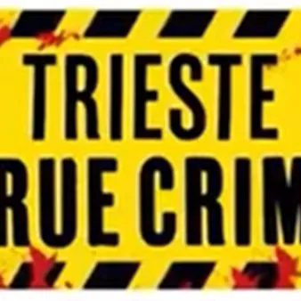

da gio 5 nov a sab 7 nov
Trieste True Crime
Al via la seconda edizione di Trieste True Crime che dedicherà quest'anno l’attenzione al true crime tra rigore scientifico e racconto mediatico. Il true crime può rappresentare uno strumento per comprendere i fenomeni della violenza, interrogare i pregiudizi, approfondire i…
 Indicazioni
Indicazioni
- Costi e prenotazioni
- Costo non indicato · Prenotazione non indicata
- Programma
- Programma da verificare. Apri la fonte ufficiale per orari e possibili aggiornamenti.
- In caso di maltempo
- Nessuna indicazione specifica pubblicata.
- Note
- Acquisito automaticamente dalla fonte.
L’EVENTO
Descrizione completa
Al via la seconda edizione di Trieste True Crime che dedicherà quest'anno l’attenzione al true crime tra rigore scientifico e racconto mediatico. Il true crime può rappresentare uno strumento per comprendere i fenomeni della violenza, interrogare i pregiudizi, approfondire i meccanismi della giustizia e sviluppare uno sguardo critico sul ruolo dei media. In un’epoca in cui il crimine non si manifesta soltanto nelle strade, ma prende forma anche attraverso le narrazioni che lo raccontano e lo interpretano, diventa fondamentale indagare il rapporto tra cultura e criminalità, analizzando il modo in cui esse contribuiscono a costruire e orientare la nostra percezione di ciò che è giusto, deviante e pericoloso.
L'iniziativa si apre giovedì 5 novembre alle ore 18 con la presentazione della mostra “La verità nelle tracce. Oltre 120 anni di Polizia Scientifica” presentata dalla dott.ssa Lidia Fredella, questore di Trieste. A seguire alle ore 18.30 lo psichiatra Vittorino Andreoli esplorerà il fascino del male insieme ad Alberto Bollis, condirettore de Il Piccolo .
Il venerdì 6 alla mattina si terrà un incontro, già sold out , dedicato alle scuole, per parlare di violenza e bullismo con lo scrittore Andrea Franzoso, con Sergia Adamo dell’Università di Trieste e con Enrico Sbriglia, garante dei diritti della persona del Friuli Venezia Giulia. Il pomeriggio alle ore 18.00 Massimo Giletti e Alessandro Politi dialogheranno su true crime e racconto mediatico.
Sabato 7 novembre alle ore 15 il gen. Luciano Garofano, già comandante dei Ris di Parma, e Simone Tuzza - docente dell’Università di Bologna nonché autore del saggio “Criminologia pop” - dialogheranno sui cold case e il loro racconto tra verità scientifica e immaginario collettivo; modera la giornalista Laura Tonero de Il Piccolo .
Alle ore 16 un doppio incontro dedicato ai femminicidi per tenere la luce sempre accesa su un fenomeno che non vede regressione: Salvatore Garzillo - cronista di nera e autore delle suggestive illustrazioni che accompagnano la veste visiva del programma “Blu Notte” di Carlo Lucarelli - coinvolgerà il pubblico nella performance “Il giro di nera. A stand up tragedy”. A seguire la tavola rotonda con Elisabetta Migliorelli, vicedirettrice TG2; Patrizia Romito, già docente Università di Trieste; Valeria Dulbecco per la Questura di Trieste; Gianpaolo Greco, comandante provinciale Carabinieri; Salvatore Garzillo, cronista di nera e graphic journalist; modera Francesca Nocerino, già giornalista TG2. Chiude la giornata l’incontro sulla scienza nelle indagini, con un rappresentante della Polizia di Stato; Stefano D’Errico, direttore della struttura complessa SC (UCO) Medicina legale Asugi; Raffaele Barisani, medico legale; modera Laura Tonero, giornalista de Il Piccolo.
L'ingresso agli appuntamenti è libero fino a esaurimento posti.
IL PROGRAMMA
Programma e orari
Appuntamenti raccolti dalle fonti elencate. Dove manca un orario, non è ancora disponibile in questa scheda.
Programma pubblicato
- Dal 2026-11-05 al 2026-11-07
INFORMAZIONI UTILI
Prima di partire
- Controllare la fonte prima di partire.
ORGANIZZAZIONE